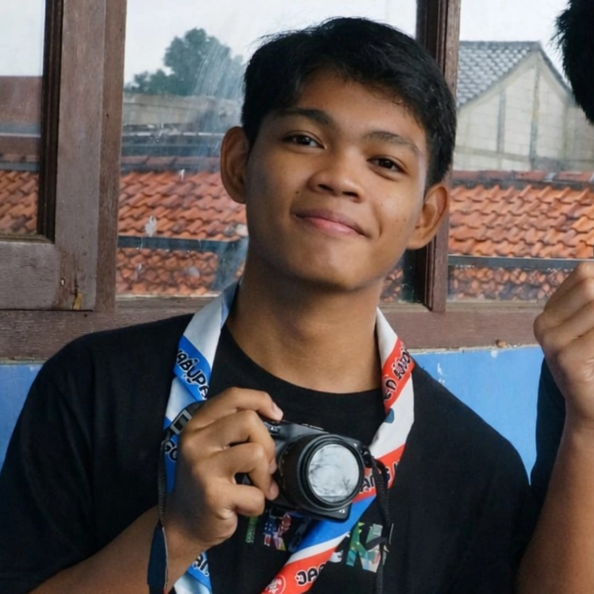

Saya adalah lulusan baru MA Khairul Bariyyah yang berkomitmen tinggi buat tidak tersesat di semester awal perkuliahan. Saat ini berstatus sebagai calon mahasiswa yang siap beradaptasi dengan dunia kampus, tahan banting sama tugas, dan selalu siap sedia kalau diajak nongkrong produktif.

"Saya adalah tipe orang yang suka melihat segala sesuatu dari sudut pandang taktis."
Saya adalah lulusan MA Khairul Bariyyah yang bangga menganut prinsip hidup sehat tanpa asap rokok, tapi tetap selalu penuh dengan asupan humor segar. Saya adalah tipe orang yang suka membaca situasi dan mengatur strategi dengan sedikit 'otak politik'—namun tetap dibungkus dengan selera humor yang lucu biar suasana tidak kaku. Saya adalah individu yang siap diajak diskusi serius, nongkrong santai, atau kerja bareng dalam tim yang dinamis.
BORN
Bekasi, 24 Maret 2008
STATUS
Calon Mahasiswa
NATIONALITY
Indonesia 🇮🇩
// Educational Journey
Madrasah Aliyah
Madrasah Tsanawiyah
Madrasah Ibtidaiyah
// Leadership Experience
Organisasi Pelajar Khairul Bariyyah
Mengatur alur birokrasi organisasi, memanajemen berkas/surat, arsip internal, serta bertindak sebagai wajah utama kepemimpinan sebagai PLT Ketua saat ketua utama berhalangan hadir.
Thariq Bin Ziyad
Fokus pada ketelitian administrasi kepramukaan tingkat ambalan, merancang proposal kegiatan, pencatatan logistik, serta dokumentasi arsip formal secara berkala.
// What I Am Good At
Microsoft Word
Dokumen & Laporan Rapih
Canva Workspace
Visual & Poster Kreatif
Team Collaboration
Komunikasi & Target Bersama
Tertarik untuk berkolaborasi atau sekadar *sharing*? Drop a message!